Last updated: 2018-05-29
Code version: 09f8ca7
| index | Samples | # mutations | # subjects |
|---|---|---|---|
| 1 | Jiang_cases_DNM.bed | 2,091 | 32 |
| 2 | Michaelson_cases_DNM.bed | 581 | 10 |
| 3 | Yuen_NM2015_cases_DNM.bed | 9,381 | 162 |
| 4 | Wu_cases_DNM.bed | 1,915 | 32 |
| 5 | Kong_cases_DNM.bed | 4,930 | 78 |
| index | Samples | # mutations | # subjects |
|---|---|---|---|
| 1 | Wong_NC_2016_693_control_SNV.bed | 27,092 | 693 |
| 2 | A->C | 990 (3.65%) | |
| 3 | A->G | 3,812 (14.07%) | |
| 4 | A->T | 815 (3.01%) | |
| 5 | C->G | 1,274 (4.70%) | |
| 6 | C->T | 5,314 (19.61%) | |
| 7 | C->A | 1,298 (4.79%) |
There are 585,017,944 C’s and 844,868,045 A’s in hg19.
De novo WGS of the combination of 1629 ASD cases and 1548 controls.
| index | mutation type | # mutations |
|---|---|---|
| 1 | A->C | 7,821 |
| 2 | A->G | 29,370 |
| 3 | A->T | 7,417 |
| 4 | C->G | 10,255 |
| 5 | C->T | 45,638 |
| 6 | C->A | 9,804 |
There are two ways to fit the model, GLM and optims. Both methods give the same esrimate either for whole genome or categorized windows as whown in simulations. Here only present the result by GLM with categorization,
\[y\sim Pois( e^{\mu+X^T\beta})\]
offset term uses 7-mer ERV baseline mutation rate, which is sum of 7mer-mutation rate in a window for each mutation type, e.g. for A->C, sum over all 7-mer mutation rate with A->C in the center.
confidence interval could be obtained as well
| index | mutation type | mutations rate |
|---|---|---|
| 1 | A->C | \(1.6627\times 10^{-9}\) |
| 2 | A->G | \(6.1805 \times 10^{-9}\) |
| 3 | A->T | \(1.5633 \times 10^{-9}\) |
| 4 | C->G | \(2.8075 \times 10^{-9}\) |
| 5 | C->T | \(1.2885 \times 10^{-8}\) |
| 6 | C->A | \(3.3977 \times 10^{-9}\) |
The window length is set 100 bp. Use GLM to fit the model, and stated otherwise.
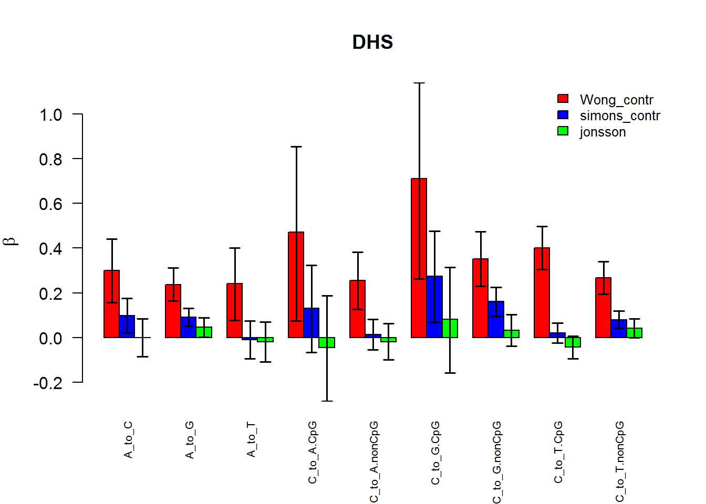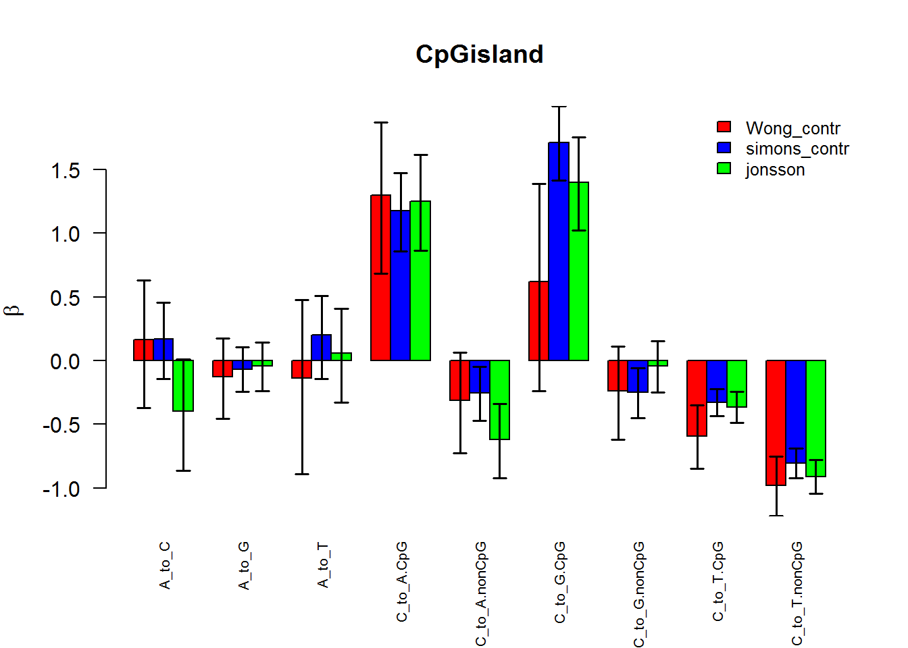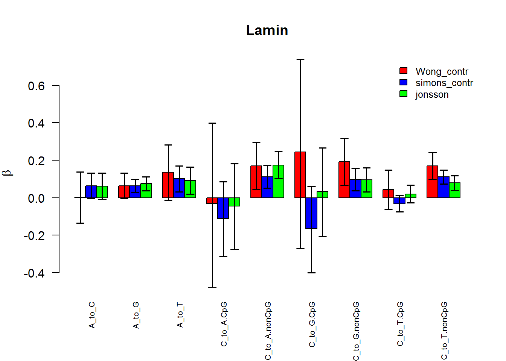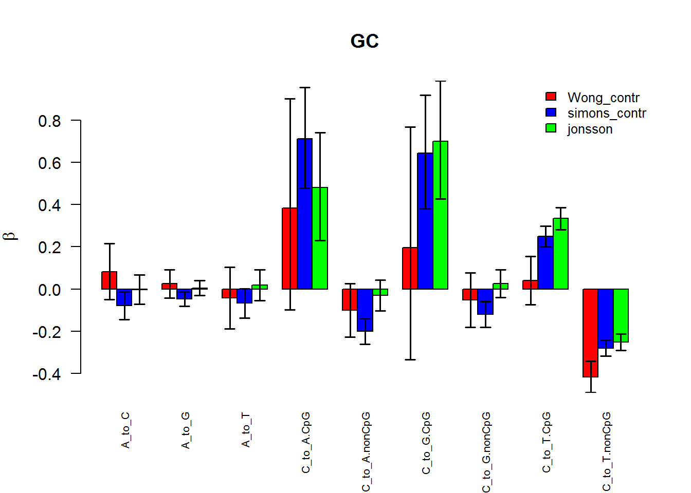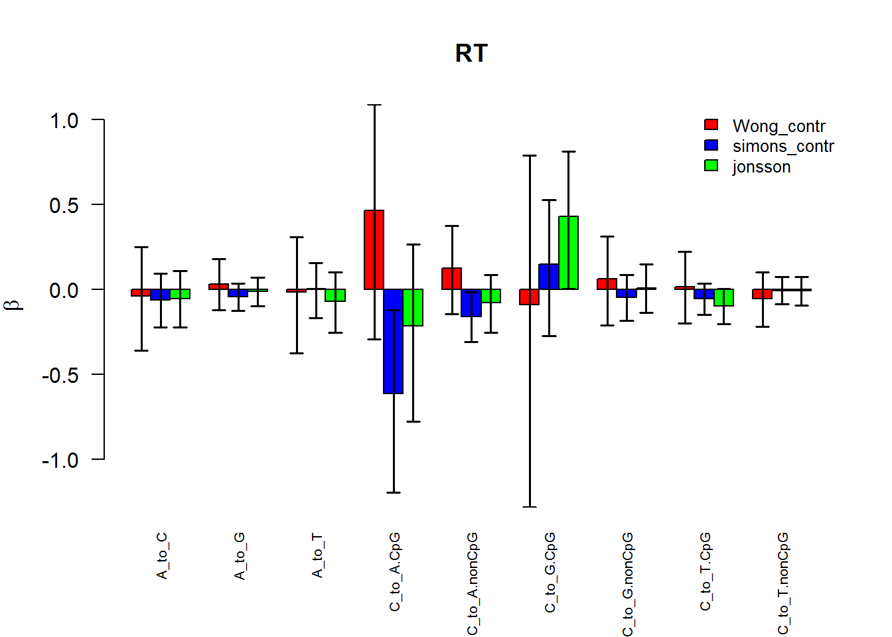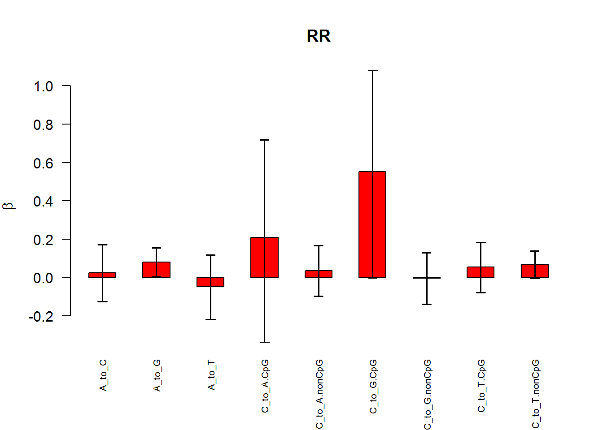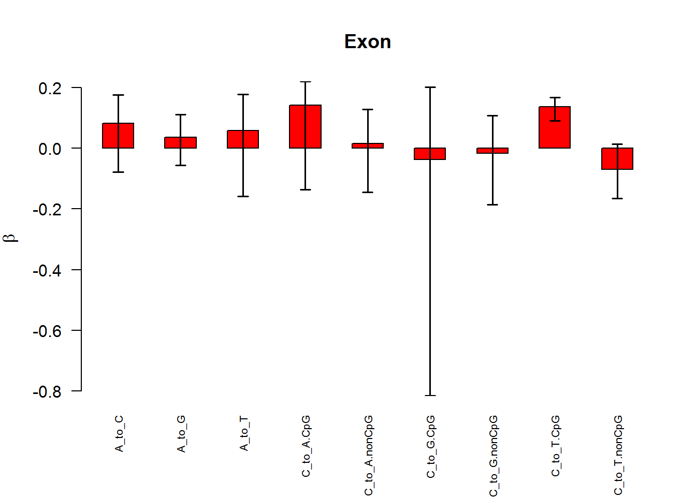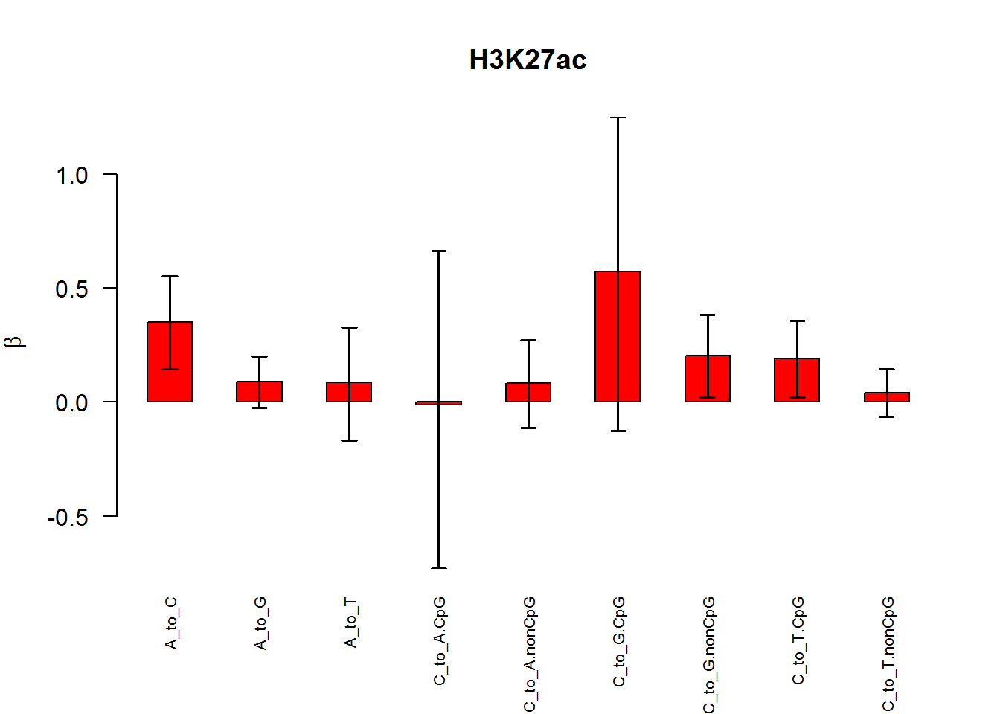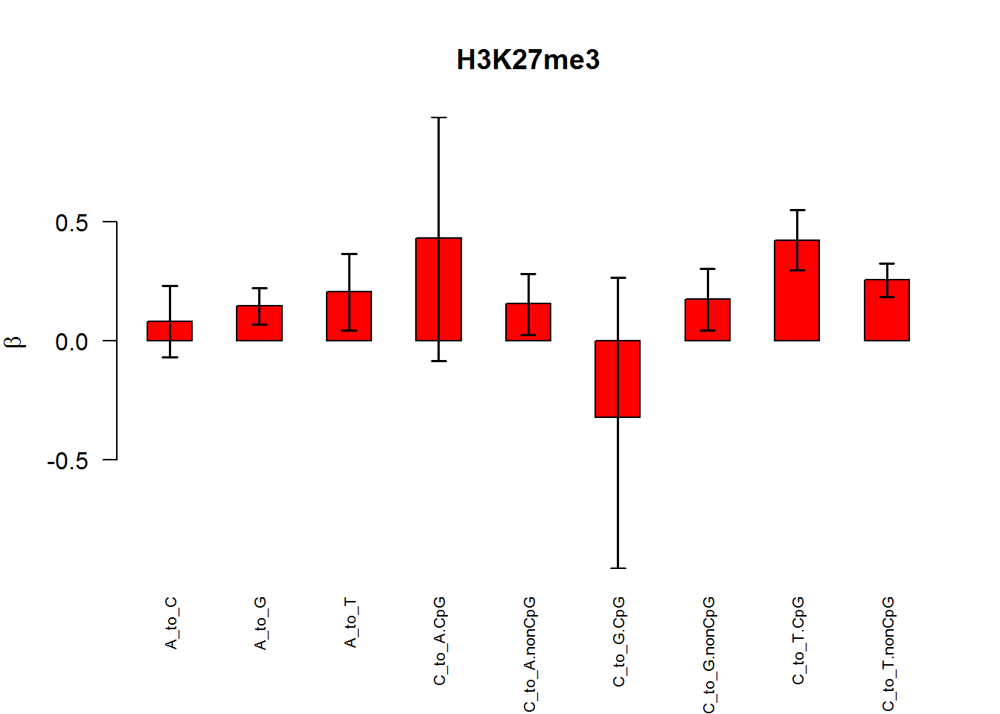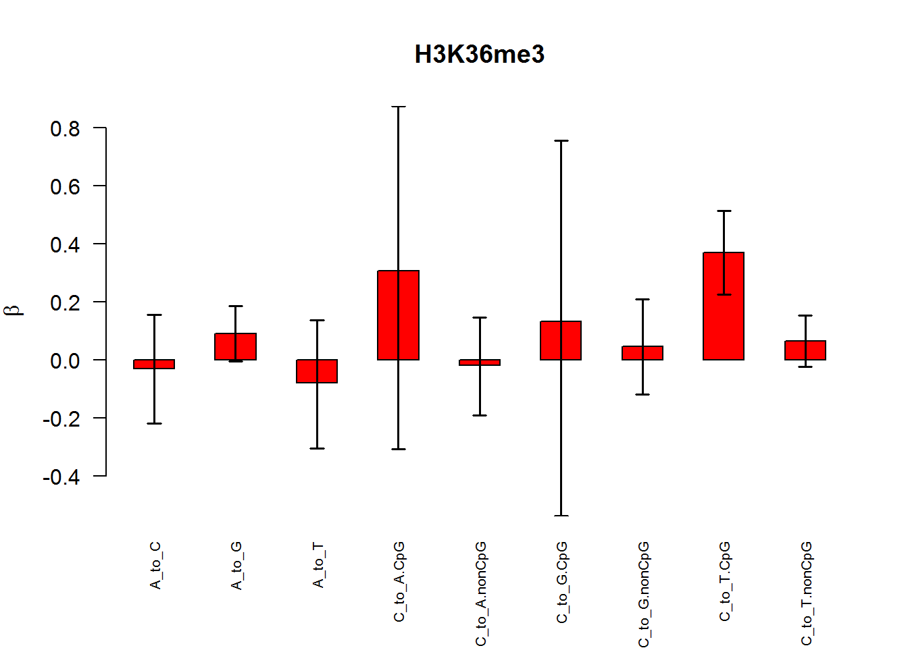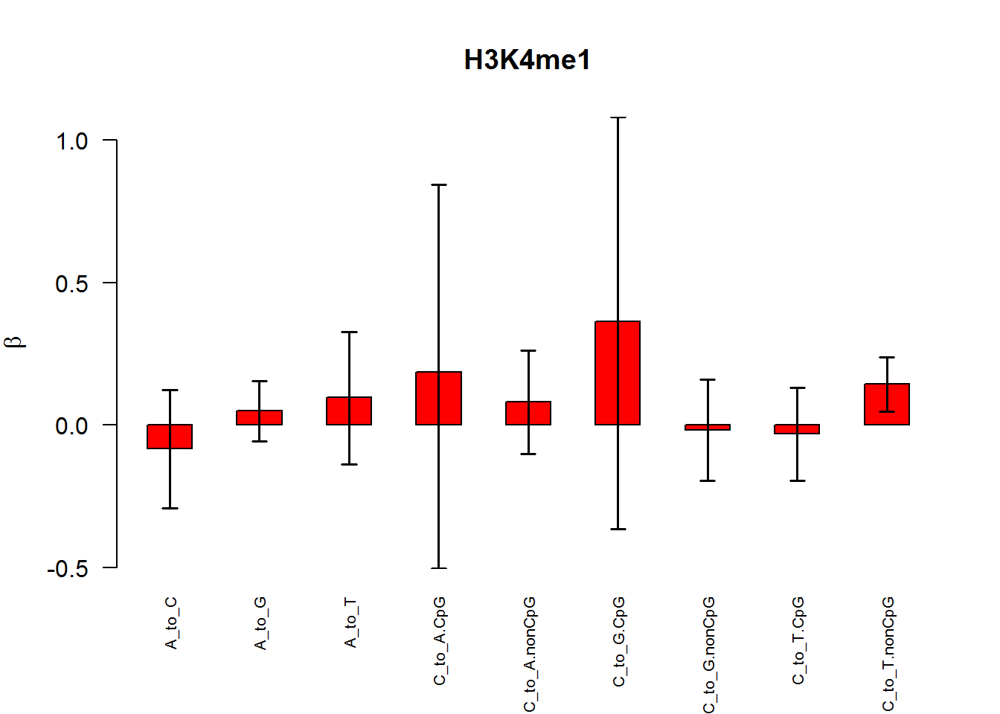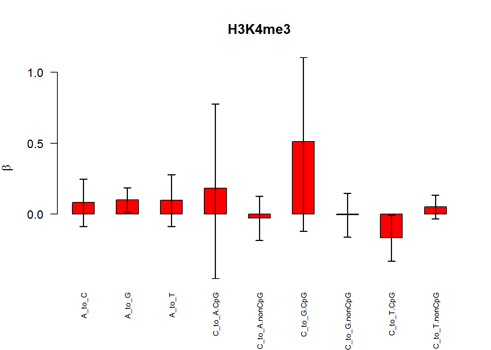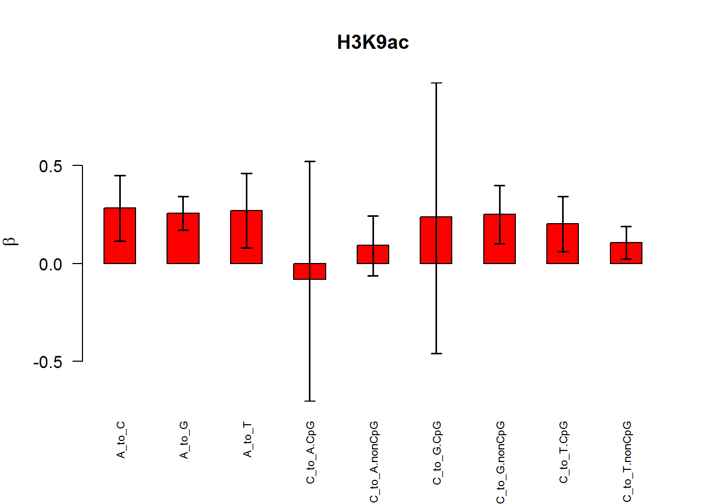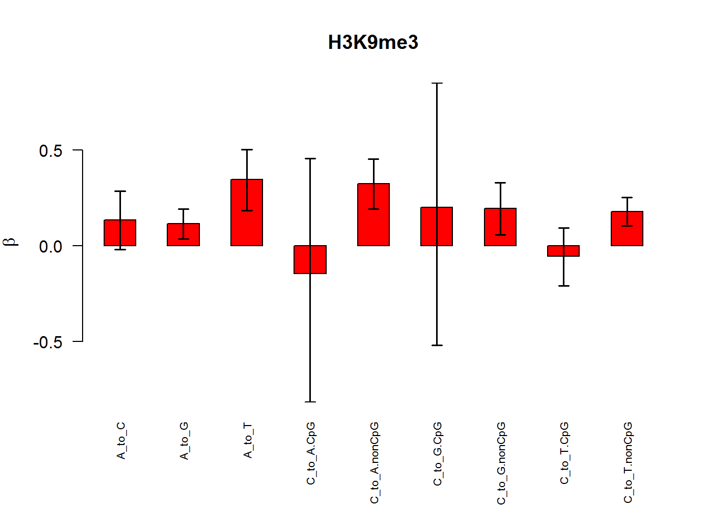
Fit 14 covariate features simultaneously.
95% confidence interval by GLM is often big.
sessionInfo()R version 3.5.0 (2018-04-23)
Platform: x86_64-w64-mingw32/x64 (64-bit)
Running under: Windows 7 x64 (build 7601) Service Pack 1
Matrix products: default
locale:
[1] LC_COLLATE=English_United States.1252
[2] LC_CTYPE=English_United States.1252
[3] LC_MONETARY=English_United States.1252
[4] LC_NUMERIC=C
[5] LC_TIME=English_United States.1252
attached base packages:
[1] stats graphics grDevices utils datasets methods base
other attached packages:
[1] knitr_1.20
loaded via a namespace (and not attached):
[1] compiler_3.5.0 backports_1.1.2 magrittr_1.5 rprojroot_1.3-2
[5] tools_3.5.0 htmltools_0.3.6 yaml_2.1.19 Rcpp_0.12.16
[9] stringi_1.1.7 rmarkdown_1.9 git2r_0.21.0 stringr_1.3.0
[13] digest_0.6.15 evaluate_0.10.1This R Markdown site was created with workflowr